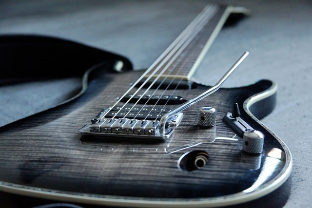
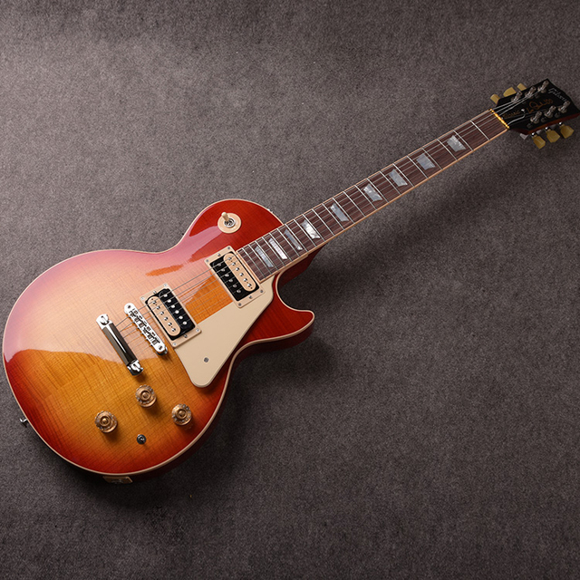
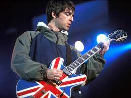
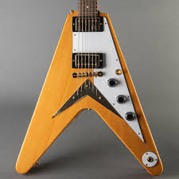

일반적으로 브릿팝은 어둡다는 인식이 있는데, 이것은 오해로서 사실 전혀 반대에 가깝다. 브릿팝의 전성기 시절, 그러니까 94-95년의 블러, 펄프, 슈퍼그래스 등의 앨범을 들어보면 오히려 밝고 경쾌하다. 즉 브릿팝은 기타와 멜로디가 주가 된 90년대 영국 스타일의 모던 록이라고 할 수 있다. 오아시스는 브릿팝의 이러한 특징을 가지고 있으면서도 다른 브릿팝 밴드들에 비해 훨씬 볼륨이 크고 강렬한 디스토션을 먹인 거친 기타 소리를 특징으로 한다. 이런 거친 기타 사운드 때문에 브릿팝 밴드중에 가장 대표격이라고 볼 수 있는 오아시스가 사실 사운드적으로는 오히려 그중에선 가장 미국적이라는 평가를 받는다. 하지만 단순한 코드 구성과는 달리 그 위에 얹혀진 멜로디는 굉장히 아름답고 서정적이다. 오아시스의 음악이 많은 사람들에게 쉽게 받아들여지고 높게 평가받는 이유가 바로 이것. 쉽지만 단순하지 않은 아름다움이 있기 때문이다. 노엘 갤러거도 오아시스의 음악이 대중적의 사랑을 받는 이유로 굉장히 쉬운 코드 진행에 얹혀진 아름다운 멜로디를 꼽았다. 앨범의 트랙간 퀄리티 밸런스가 굉장히 잘 맞춰져있는 밴드이기도 하다. 세계적으로 유명한 밴드나 아티스트들도 싱글로 발매된 수록곡과 논싱글(non-single) 트랙간의 퀄리티 차이가 큰 경우가 많은데 그것에 비하면 오아시스는 밸런스가 잘 맞춰져 있는 편이다. 앞서 말했듯 오아시스의 사운드 그 자체는 참신함이 적은 편이나, 그럼에도 불구하고 세계적인 밴드가 될 수 있었던 것은 오아시스만의 색깔이 분명히 존재했기 때문이다. 배철수의 평을 들자면 "기라성같은 선배들의 멜로디에 강한 스파이크로 되받아치는 듯한" 노엘의 작곡 능력에, 그 목소리만으로도 곡에 강력한 기운을 불어넣는 리암의 보컬이 어우러진 결과라 할 수 있겠다. 이들에게 큰 영향을 준 밴드로는 역시 비틀즈. 그 외 음악적으로 티렉스, 섹스 피스톨즈, 롤링 스톤즈, 더 스미스 그리고 스톤 로지스 등의 영향을 많이 받았다. 그리고 멤버가 교체된 4집 이후부터는 앤디 벨의 라이드와 겜 아처의 헤비 스테레오의 색깔도 찾아볼 수 있다. Q Special Edition 2002년 7월호 인터뷰에서 노엘은 '자신은 가장 유명한 비틀즈 팬이지만 오아시스의 음악은 비틀즈와는 거리를 두고 있다'고 말했다. 그러면서 자신의 음악을 신나는 면에서 스투지스, 섹스 피스톨즈, 비틀즈, 롤링 스톤즈나 스톤 로지스와 같은 뮤지션들과 비유한다. 오아시스가 해체되고 나서 두 형제가 노엘갤러거즈 하이플라잉버즈와 비디 아이로 나뉜 뒤에는 노엘이 상대적으로 훨씬 진보적인 사운드를 보여주었기 때문에 오아시스의 음악적인 정체(停滯)가 무조건적으로 노엘의 취향에 기반했다라는 인식은 틀린 인식이라고 할 수 있겠다. 리암은 해체 이후에도 계속해서 정통 로큰롤을 지향해 온 걸로 보아, 오아시스의 음악적 성향은 리암의 입김이 의외로 강했다고 볼 수도 있다. 밴드의 장르를 구분하자면, '얼터너티브'라는 음악의 범위를 어느 정도로 한정하냐에 따라서 이견이 생길 수 있다. 만약 좁은 의미로 사용한다면 오아시스는 얼터너티브가 아닌 모던 록, 특히 흔히 브릿팝이라고 부르는 '브리티시 모던 록'에 속한다. 하지만 동시대에 활동했던 스웨이드나 블러, 그리고 이후의 등장한 트래비스나 콜드플레이와 같은 말랑한 음악과는 다른 거친 디스토션이 많이 함유된 음악을 구가한다는 점에서 분명 다른 브릿팝 밴드들 보다 얼터너티브적인 측면이 있다고 할 수 있다. 비틀즈를 필두로 하는 브릿팝 계열 밴드들의 영향 외에도 섹스 피스톨즈와 롤링 스톤즈와 같은 로큰롤 밴드들의 영향이 짙게 드러난다는 점에서 더더욱 그렇다고 볼 수 있다.
   